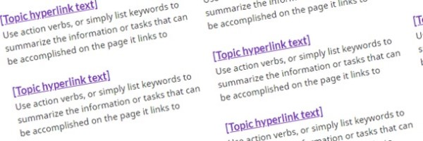
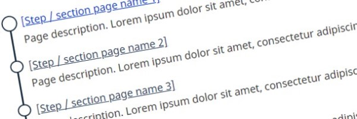
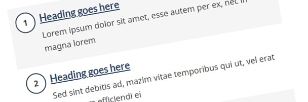

Navigation links with supporting descriptions – WET4 – CRA user-centred design guide
Use to showcase a set of links, along with the supporting descriptions (also known as doormats), on core navigation pages. This provides an accurate and concise description of what a user will find on the destination page. Together, these sets of links and descriptions provide clear and distinct choices for users trying to complete a task.
On this page
When to use
Each link with its doormat description provides an accurate and concise description of what a person will find on the destination page. Together, these sets of links and descriptions provide clear and distinct choices for people trying to complete their task.
A navigation link, bundled with a teaser description (known as a doormat), is an established pattern on certain templates and components. Typically, this would appear on the on:
| Located on | Appearance |
|---|---|
| Topic pattern template | Side-by-side on desktop (stacked on mobile)  |
| GCsubway pattern template | Stacked within the GCsubway on the main index page  |
| Steps component | Stacked as steps  |
Use when
- The page template or component requires you to use doormats
- Providing links to topics or destination content related to the page it is on
- The primary purpose of the page is to provide clear choices to navigate to tasks
Do not use when
- The pattern not already part of an established template or component
How to implement
Doormat text should support descriptive link text by clarifying what someone can find or do at the link. A good doormat should help people correctly decide whether or not to click through.
-
Create link text
Link text must:
- Make sense within the context of the page
- It does not need to exactly match the destination page title
- It does not need to be unique across Canada.ca
- It must be descriptive, unique within the page, and clearly distinguishable from the other links on the page
- Don’t end linked text with punctuation (for example, “How do you apply for funding?”)
- The linked text must speak to a person (for example, “Apply for funding”)
- Not exceed 75 characters (with spaces), although optimal character limit for links is 45 characters (with spaces) for both official languages
- Use only standard link styles as defined in the Web Experience Toolkit (WET)
- Be written for a grade 6-8 reading level
- Use popular keywords that the target audience will likely know and use; base choices on research and evidence
- Not use acronyms or abbreviations unless most people know these better than the long-form equivalent
- Make sense within the context of the page
-
Create a supporting description (doormat text)
- Be descriptive
- Not repeat the link text in its entirety, creating unnecessary redundancy
- Be unique from other doormats on the same page
- Suit the context of the page
- Be short, in plain language, and scannable (120 characters or less, including spaces)
- Be written for a grade 6-8 reading level
- Use popular keywords that the target audience will likely know and use; base choices on research and evidence
- Not use acronyms or abbreviations unless most people know these better than the long-form equivalent
- Complement the link it accompanies to provide greater detail and clarity about the scope of the link itself
- Recommended style is to list keywords or keyword phrases separated by commas; full sentences are not required
- Don’t use introductory phrases such as “Includes…”, “Information on…” or “Learn more about…”
- Don’t include links
- Don’t include promotional messaging
- Limit the characters to 120 (with spaces) in both official languages
- Use only standard presentation styles as defined in WET
- When used to provide access to a large number of items at the same level (for example, lists of countries or species)
- When the destination page consists primarily of a list of links, and so can be completely replaced by the drop-down menu
- Write the doormat text
-
Review the destination page
The content destination page helps you determine if the doormat text should be written in a task-oriented way, or in an informational way.
-
Focus on tasks: Option 1
Describe the main goal(s) the user can accomplish by following the link.
Examples - Writing task-focused doormats
- Helpful:
Calculate your amount
Use our online calculator to find out how much your GST/HST credit payments may be this year
- Not as helpful:
Calculate your amount
A calculator for the GST/HST credit
- Helpful:
Wage and hiring support for businesses
Find out if you are eligible, how to apply, and what happens after you have applied
- Not as helpful:
Wage and hiring support for businesses
Subsidies for employers affected by the COVID-19 pandemic
- Helpful:
-
Focus on information: Option 2
When the link offers information on topics rather than specific tasks, describe or list the most important things the user will be able to read or learn about.
Example - Writing information-focused doormats
- Helpful:
Environment and natural resources
Weather, climate, agriculture, wildlife, pollution, conservation, fisheries
- Not as helpful:
Environment and natural resources
Read about topics related to the environment and natural resources
- Helpful:
-
Identify what’s unique
When there are multiple links on a page with similar labels or functions, include information that will help users decide which link will have what they’re looking for. Depending on the context, this could mean including who the content is applicable to, the purpose of the content, or any other factor that helps differentiate the links.
Examples - Differentiating doormats
- Helpful:
Canada Worker Lockdown Benefit
If you are an employed or self-employed person unable to work due to a COVID-19 lockdown, you can get up to $300 per week
- Not as helpful:
Canada Worker Lockdown Benefit
How to get financial support if you were subject to a COVID-19 lockdown order
- Helpful:
Local Lockdown Program
If you are a business, charity, or non-profit subject to a COVID-19 lockdown, you may qualify for a subsidy to support your wages and rent
- Not as helpful:
Local Lockdown Program
How to get financial support if you were subject to a COVID-19 lockdown order
- Helpful:
Tax scams and you
Understand tax scams and what to do if you suspect you’ve been a victim of a scam
- Not as helpful:
Tax scams and you
Common scams and how you can identify them
- Helpful:
Don’t get scammed
Shareable infographics and tips about avoiding the most common tax scams
- Not as helpful:
Don’t get scammed
How to avoid common tax scams
- Helpful:
Consider the context
Approach the doormat text according to the user and the part of their journey they are on. The information you include in doormat text may change depending on the purpose of the page it will appear on, and how many contextual clues are nearby.
Examples - Contextualizing the doormat
- Context 1
(If the doormat is featured from Individual tax credits)Canada Worker Lockdown Benefit
Refundable credit for a caregiver of a spouse, common-law partner, or a child with a physical or mental impairment
- Context 2
(If the doormat is featured from What’s new for caregivers in 2021)Canada Worker Lockdown Benefit
Find the new maximum amount and calculation for the caregiver tax credit on the individual tax return
- Context 1
- Format doormat text
-
-
Use a single, descriptive phrase: Option 1
Use a single, descriptive phrase when there are one or two primary tasks or topics at the target page. Because of the 120-character limit for doormat text, the phrase does not need to be a grammatically complete sentence and should not have any punctuation at the end.
Examples - Using a single, descriptive phrase
- Task examples:
Trade Commissioner Service
Find international contacts and get business advice for commercial success abroad
Budget Planner
Create your budget and receive personalized tips to improve your finances
- Information examples:
Supply chain management
How an effective supply chain creates a seamless process from pre-production to consumption
Making a budget
Tips to make and stick to a personal budget
- Task examples:
-
Use lists of keywords or tasks: Option 2
Use lists of keywords or tasks when multiple equally important items can be found at the target page. The list should not have any punctuation at the end.
Examples - Using lists of keywords or tasks
- Task examples:
Disability tax credit
Tax credit for people with severe impairments: who is eligible, how to apply, and how to claim it
- Information examples:
Aquatic ecosystems and ocean science
Fish habitats, aquatic species, aquaculture, marine contaminants, aquatic biotechnology and biomonitoring
Life events and your money
Losing your job, living as a couple, buying a home, having children, getting divorced and more
- Task examples:
-
Doormat text must:
Drop-down menus are permitted in place of a link description in specific circumstances:
Arrange the order of the items
-
Determine the best approach
- Demand-based
- Prioritization is based on demand (for example, based on web metrics), with higher demand links appearing ahead of lower demand ones
- Sequential
-
- Use sequential, numbered doormats when links must be followed in a step-by-step order (for example, confirming eligibility, registering and then charging for GST/HST)
- Use to allow people to skip over optional/non-applicable steps or steps they have previously completed
- Subheadings
-
- Use to group links and descriptions that are very similar, in cases where it wouldn’t make sense to move the group into a sub-topic page
- Use to avoid information overload; ideally no more than 9 links with descriptions per subheading
- Mixed
- Combinations of the above, as appropriate
- Limit application to avoid overly complex sets of links and descriptions
-
Consider the flow
In all cases, priority sequencing is as follows:
- In a single column layout, the priority sequencing is top to bottom
- In using across multiple columns, the priority sequencing is from left to right, then top to bottom
-
Complementary components
Additional add-on features and behaviours are available.